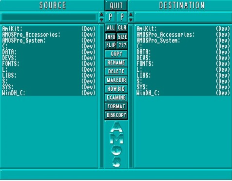

Disc Manager
The AMOS Professional Disc Manager is a highly efficient and extremely fast tool for the
professional organisation of all the files on your discs. It is ideal for programmers who have
upgraded to an extra disc drive, and single-drive users will also find it beneficial. The Disc
Manager is used to reorganise all files from a SOURCE disc to a DESTINATION disc.
Calling Disc Manager
Disc Manager is summoned from the User Menu by selecting the [Disc Manager] option.
Here is a view of the Disc Manager screen.

The screen has two main display zones, clearly headed SOURCE and DESTINATION, with all
the Disc Manager control buttons stacked between these two zones. The zone that is currently
active has its path name highlighted by a red bar, and information about this active path is
displayed in an information line at the bottom of the screen. If a path name is not valid then
nothing is displayed in the information line. As usual, all buttons and sliders are controlled
using the mouse.
Click on either the [SOURCE] or [DESTINATION] headings to select one of these zones, or click
anywhere in either of the large window areas that display a list of the available directories.
Entering a path name
Path names are displayed at the top of the screen, immediately below the SOURCE and
DESTINATION headings. To enter a path name, click on the appropriate name panel, then type
in a string of characters for the path name, from the keyboard. If an empty string is entered, the
current directory name will be used as the path name. To abort this process, press Esc.
It is important to remember that the path names of your Source and Destination must be
different from one another, and it is always good practice to give each of your discs a different
name, to avoid confusion.
At the inner end of each path name panel is a pair of [up arrow] and [down arrow] buttons.
These are used to scroll into view any lists of files that are too long to fit into the Source or
Destination windows. Below these buttons are normal vertical sliders, if you prefer to use them.
A continuous scroll of file names towards the mouse cursor is achieved by using the right mouse
button.
You should already be familiar with the [Parent] option in the AMOS Professional File
Selector. Similarly, each path of the Disc Manager has its own Parent button, to allow
rapid access back to the parent folder, after searching through its files. To enter a sub-
directory, all that is needed is a double-click on the folder name you want to open.
A "device list" is displayed by clicking with the right mouse button in the active path panel. The
available devices, that is to say the equipment for communicating with your Amiga such as disc
drives, will be listed at the top of the window zone. One more click with the right mouse button
will make the device names disappear. To select a device for use, simply click on its name with
the left mouse button.
Selecting files
To select a file or a directory, place the mouse cursor over its name then click. De-select by
clicking again on the file or folder.
The vertical stack of control buttons is used to handle your files. They will now be explained,
from top to bottom.
[ALL] is a short-cut button that selects all of the files listed in the active path, ready for
handling.
[CLEAR] performs the opposite task to [ALL], by de-selecting all of the files in the active
path.
There can be files on your disc that end with an "Info" tag, and the [INFO] button acts as
a switch to turn these information files off and on, in the zone window display. These
files can still be copied even if they are not currently displayed, for example, if entire discs are
being copied.
Files are displayed by name, followed by their length, in bytes. If you wish to turn off the
display of their lengths, for example if the file names are too long, the [SIZE] button acts
as a switch, turning them off and on. Even if a file name is shortened in the display, names of up
to 64 characters long are still valid.
The [FLIP] button performs a major task! It flips over both directories, so that the Source
becomes the Destination, and the old Destination directory becomes the new Source. If
you use it now, you will note that the active path stays active after a "flip".
Pressing the information button [???] will display the AMOS Professional Disc Manager
credits.
Copying files
The Disc Manager can handle any AMOS Professional files with the greatest of ease, as well as a
range of other audio and text files. To copy one or more files or directories, first go to the Source
directory and select one or more file names that interest you. Remember, if the files you want to
copy are currently displayed in the Destination directory, use the [FLIP] button to swap them
into your Source directory.
Now click on the [COPY] button. The Disc Manager will tell you exactly how many
files and directories are to be copied, and it will also calculate if there is enough
space available in the Destination directory.
It does not take into account any space that might be saved by files that you wish to overwrite!
Also note that a Ram disc grabs memory when it needs space, so you can ignore any reports on
available disc space in this case.
Pressing [COPY] again will kick off the copying process. The Disc Manager will create any
directories needed on the destination disc and then load up as many files as it can from the
Source disc, into the computer's memory, before saving them on the Destination disc.
If you are using more than one disc drive, the process is incredibly easy. For those of you
restricted to the internal floppy disc drive "Df0:", your screen will tell you when to swap over
your discs.
The Disc Manager is not just concerned with copying files from one disc to another.
It can perform much simpler tasks. Suppose you want to change the names of one
or more files. Select the appropriate files using the mouse, and then click on the [RENAME]
button.
You will be asked to type in and enter the new file names, one by one, through the selected list.
Press the Esc key to halt this process at any time.
To erase one or more files from the current disc, select their names in the usual way
and then click on [DELETE]. A menu will appear, showing the files and directories
to be deleted. You now have the following choices:
[DELETE] erases the next file only.
[SKIP] jumps over the next file, leaving it on the disc.
[DEL ALL] erases all the selected files, so take care when using this powerful option. You can
halt the deleting process with a click of the mouse button.
[ABORT] stops the deleting process, and returns you to the Disc Manager screen.
This is a very simple way of making a new directory. Click on [MAKE DIR] and
then type in the name of the new directory to be created.
 To find out the size of files and directories, select their names as usual and click on
the [HOW BIG?] button. You will be told exactly how big the selected files and
directories are, in total bytes.
To find out the size of files and directories, select their names as usual and click on
the [HOW BIG?] button. You will be told exactly how big the selected files and
directories are, in total bytes.
Examining files
The AMOS Professional Disc Manager has been designed to provide the maximum possible
service with the greatest possible ease. The Manager can be used to examine a whole range of
different files and then provide you with the opportunity to examine them for yourself.
Select as many files as you wish, and click on [EXAMINE]. AMOS Professional will
now look at each of these files in turn and see what category they fall into. It
achieves this by loading part of each file, and as soon as it is recognised, one of four options is
presented, at your service.
Depending on what type of files are being examined, you will be able to [DISPLAY], [HEAR],
[READ] or [PRINT] them!
In this way, the Disc Manager lets you examine the contents of your discs very quickly, while
reorganising them or simply browsing through. Here is a list of the various files that will be
recognised.
IFF pictures
AMOS Professional packed pictures
When these sorts of pictures are recognised, you are given the option to [DISPLAY] them. The
displayed picture will remain on the screen until you press a mouse button.
Object Banks
If you choose to [DISPLAY] an Object bank on the screen, it will appear in reduced size,
reminding you of all the images stored in that bank.
Ascii text files
Two choices are offered here. You may either [READ] a text that has been saved in this format,
or [PRINT] out the file.
IFF samples
AMOS Professional music banks
AMOS Professional sample banks
Soundtracker modules
MED modules
If any of these files are recognised, you will be asked if you wish to [HEAR] them, IFF samples
will be played at their original frequency as a default, but alternative frequencies may also be
selected. Music banks will be played exactly as they were saved. When you [HEAR] a sample
bank, the samples will be played one after the other. If you prefer, any individual sample may
be selected and its playing speed can be changed. Soundtracker modules will also be recognised,
as well as most raw samples.
There are no options provided for the following sorts of files:
IFF music
Amiga Dos executable programs
Multiple banks
Copying discs
As well as providing you with the easiest possible disc formatting, AMOS Professional allows
you to make copies of entire discs, as many times as you like.
After [DISC COPY] has been selected, the following steps are taken to make exact
copies of whole discs.
First, select the name of the disc drive to be used for holding the SOURCE. Next, choose the
DESTINATION drive, where the new copies are to be made. Obviously if you only have
access to the one internal disc drive, both of these names will be the same.
Now choose the number of new copies you want to make of the original Source disc. The Disc Manager will ask for a new Destination disc after each copy has been made, until all of you
copies have been completed.
Select [VERIFY ON] or [VERIFY OFF], as explained above, for the formatting process. If the
verification is on, the copying process will take twice as long as copying with verification set
to off.
Finally, hit the [DISC COPY] button, and follow the screen prompts. You will be pleased to learn
that the AMOS Professional Disc Manager crunches down the disc tracks into the computer's
memory, to try and save you the time and effort of swapping over discs more than is absolutely
necessary.
When you have finished exploiting the AMOS Professional Disc Manager, and you
are ready to move on, simply use the [QUIT] button, at the top of the screen.
Remember that directories can also be changed when editing your programs, allowing you to
set directories from Direct mode.
DIR$
reserved variable: change current directory
s$=Dir$
Dir$=s$
As explained in Chapter 10.2, DIR$ can hold the directory name that is to be used as the starting
point for further disc operations, like this:
Dir$="Df0:Sounds/"
Print Dir$
 Discs may be formatted at any time, via the Disc Manager. When [FORMAT] is
selected, the new disc is prepared in this logical order:
Discs may be formatted at any time, via the Disc Manager. When [FORMAT] is
selected, the new disc is prepared in this logical order: